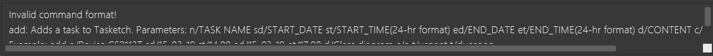
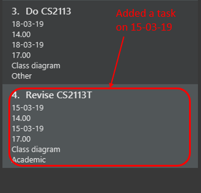
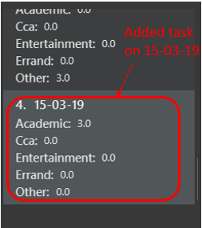
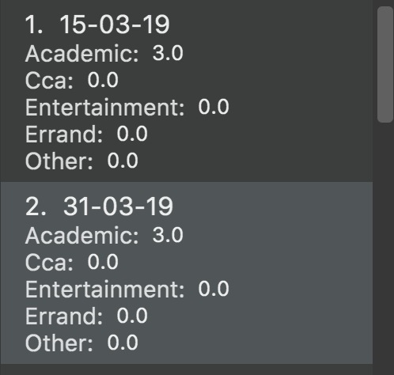
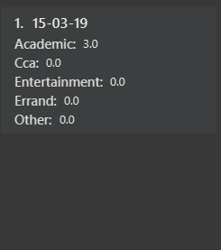

PROJECT: Tasketch
About the project
My team and I were tasked with enhancing a basic command line interface addressbook for our Software Engineering project. We chose to morph it into a time management with tasks system called Tasketch. This enhanced application enables all NUS students to manage their daily time by providing an overview of all the time planned for all the tasks in a daily manner and helps them to be aware of all the tasks dateline.

Figure 1. An overview of our application.
My role was to design and write the codes for the Daily Time Planner feature with showtime command as well as some
enhancement to the add command.
The following sections illustrate these enhancements in more detail, as well as the relevant sections I have added to the user and developer guides in relation to these enhancements.
Note the following symbols and formatting used in this document:
-
add- A grey highlight (called a mark-up) word(s) indicate that this is a command that can be inputted into the command line and executed by the application. -
importTaskBook()- A grey highlight text with brackets indicates a component, class or object in the architecture of the application.
| This symbol indicates important information. |
| This symbol indicates things to take note. |
Summary of contributions
-
Main enhancement: added Daily Time Planner
-
What it does: : It keeps track of all the time planned for all the daily tasks added and the showtime command allows the user to see the time planned for different categories (academic, cca, entertainment, errand and other) for all the days or for a specific day.
-
Justification: This feature allowing the user to plan the daily time by planning tasks of certain categories after seeing how much time has been planned for that category on that day.
-
Highlights: This enhancement works closely with the
addcommands as it greatly depends on the date of the added. Getting the right data from the tasks added is important in the implementation. So, extra checks and validation on the user inputs have been implemented.
-
-
Other enhancements: added restriction and checks on the
addcommand to ensure that no invalid data being entered into the Tasketch, as well as ensuring the Daily Time Planner works correctly after the command being parsed. -
Code contributed: (Please click these links to see a sample of my code.) [Daily Time Planner code][Date and Time Check code][Morphing to Tasketch code][RepoSense]
-
Other contributions:
-
Project management:
-
Managed releases
v1.2on GitHub -
Created milestones for Tasketch version on Github
-
Setup issue trackers for Tasketch on Github
-
-
Enhancements to existing features:
-
Documentation:
-
Community:
-
PRs reviewed (with non-trivial review comments): #38
-
-
Contributions to the User Guide
We had to modify the original addressbook User Guide with instrutions for the enhancements that we had added.
The following is a excerpt from our Tasketch User Guide, showing the explanation on Daily Time Planner as well as the
commands that are important to this feature, such as add and showtime.
Daily Time Planner
This feature will help you to monitor the time planned for different tasks in a day. By looking at the time spent on different tasks, it aims to help you to plan your time better so that you will not spend most time on specific type of a task.
Adding a task: add/a
To get started, you will need to add a task into Tasketch. The format is as below.
When you are adding a task, the app will ensure that there will be no duplicate names added. This is to ensure that there is no confusion in the task names.
Adding a task with the same start date and end date means that it is a daily task, will be monitored by the Daily Time Planner. Different dates means it is a long period task, thus will not be considered as daily task but can still be added.
The app will not able to verify the correctness for the number of days in different months, so you have to ensure that
the date exists in that particular month. However, the app will able to differentiate the maximum number of days and months.
This means that you will never be able to enter more than 31 days and more than 12 months in the start date and end date.
Should you enter different start date and end date, the app will ensure that your end date is after the start date.
As for start time and end time, the app is smart enough to inform you when you have entered invalid time, such as 24.00, as this is incorrect. You will not able to enter hours beyond 23 and minutes beyond 59. The app will also ensure that the end time is after start time too. This to ensure the time spent/duration calculation (end time - start time) will result correct values.
You will also need to specify the type of category of the task that you are adding for the Daily Time Planner to monitor your time effectively. There are only 5 valid categories. (The details about it can be found in [category].)
| A task can have any number of tags (including 0) |
|
If any of the above is violated, the app will alert you that it is an invalid command with the correct format shown to
you.  Figure 2. An invalid command message. |
Format: add n/TASK_NAME sd/START_DATE st/START_TIME ed/END_DATE et/END_TIME d/DESCRIPTION c/CATEGORIES [t/TAG]…
Examples:
-
add n/CS2113 task sd/13-03-19 st/12.00 ed/13-03-19 et/14.00 d/Talk about version control
Adds a task named CS2113 task in the app. It starts at 12:00 on March 13rd, 2019 and it ends at 14:00 on the same day. The description for this task is to talk about version control. -
add n/MA1101R tutorial sd/14-03-19 st/12.00 ed/14-03-19 et/14.00 d/Tutorial 8 c/a
Adds a task named MA1101R tutorial. It starts at 12:00 on March 14th, 2019 and ends at 14:00 on the same day. Its description is tutorial and it category is academic. -
add n/CS3235 lecture sd/13-03-19 st/08.00 ed/14-03-19 et/10.00 d/Talk about network security t/important
Adds a task named CS3235 lecture. It starts at 8:00 on March 13rd, 2019 and ends at 10:00 on March 14th, 2019. Its description is to talk about network security. The tag for it is 'important'.
Result:
You should see the task added into the Task Box. (e.g. added a task on 15-03-19)

Figure 3. Expected result in Task Box after adding a task
The time duration on that task will be calculated at the back and the time will be reflected in the Day Box.

Figure 4. Expected result in Day Box after adding a task
Showing time planned for all task categories : showtime
To help you to plan and make full use of your daily time better, simply use this command to see all the time planned on all 5 categories for every day.
Showing all the days
If you want to the time planned for everyday, just use this command.
Format: showtime
Result:
You should see a list of days with all the category times in the Day Box as shown below.

Figure 5. Expected result in Day Box after `showtime`
Showing a particular day
If you want to see only one specific day, simply add the date that you wish to see behind the command.
Format: showtime DATE
Example: showtime 15-03-19
Result:
You should see a day of your choice with all the category times in the Day Box, if the date exists, else it will be empty.

Figure 6. Expected result in Day Box after showtime 15-03-19
Contributions to the Developer Guide
The following section shows my additions to the Tasketch Developer Guide for the description on the project structure as well as the Daily Time Planner feature.
Model component

Figure 7. Structure of the Model Component
API : Model.java
The Model,
-
stores a
UserPrefobject that represents the user’s preferences. -
stores the Task Book data.
-
exposes an unmodifiable
ObservableList<Task>that can be 'observed' e.g. the UI can be bound to this list so that the UI automatically updates when the data in the list change. -
exposes an unmodifiable
ObservableList<Day>that can be 'observed' e.g. the UI can be bound to this list so that the UI automatically updates when the data in the list change. -
does not depend on any of the other three components.
As a more OOP model, we can store a Tag list in Task Book, which Task can reference. This would allow Task Book to only require one Tag object per unique Tag, instead of each Task needing their own Tag object. An example of how such a model may look like is given below. Figure 7.1. Relationship of Tag with Task Model
Figure 7.1. Relationship of Tag with Task Model
|
Daily Time Planner feature
Daily Time Planner uses the information of tasks added, such as start date, end date, start time, end time and category.
Current Implementation
Start date and end date are used to identify whether the task added is a daily task, same dates mean that it is a daily
task or else it is a long term task which is not meant for daily time planning. Thus, that task will be added to
Daily Time Planner for monitoring.
Start time and end time are used for calculating the time period of that task and to be added into the accumulated time for a category for that date of a task. ( eg. if the task with date 13-03-19 is a category academic task, its calculated time period will be added to the academic accumulated time in the day 13-03-19. )
These information is passed to the calculateTime() method in Day object in the form of string, so it has to be
converted to double data type for calculation purpose using Double.valueOf(). Then it has to be rounded up to the power
of 2 for consistency in data representation.
Besides Task model being used to represent all the tasks added, there is also Day model to represent all the days
which stores information (date and accumulated time of that 5 task categories) of the tasks added to that day.
Each new Task added will not create new Day objects, instead it will either update the category times of that Day
if the new task added has the same date (same start date), or create a new Day only if there no days that have the same
date.
|
Data Structure
TaskBook needs data structure to store data. Besides the ObservableList named UniqueTaskList to store all the tasks,
there is also another ObservableList named UniqueDayList to store all the days.
| Observable List is used to observe a list so that when there is change in the list, it will notified (listeners) all the other components that utilizing this Observable List data and do the necessary updates in their own data. |
Besides those 2 mentioned above, a HashMap named dayMap is used to store another set of Day objects which are
identical to the UniqueDayList.
-
Alternative 1 (current choice): As described above
-
Pros: Faster in finding a
Dayobject as it uses a key (start date of a task) to add into and find in the hash map. -
Cons: Double work as it needs to add into and remove the
Dayobject from bothUniqueDayListanddayMap.
-
-
Alternative 2: Using the
UniqueDayListonly-
Pros: No extra work needed as adding and removing happens only to one data structure.
-
Cons: Finding a
Dayobject will be slower when there are large amountDayobjects, as it needs to iterate through the list.
-
However, dayMap cannot be implemented alone as it doesn’t have the ability to observe and notified the listeners when
there is a change. So, it has to be implemented with an ObservableList.
Since a new TaskBook is created each time undo and redo command executed as VersionedTaskBook extends TaskBook,
the data of the latest UniqueTaskList and UniqueDayList will need to transferred to the new TaskBook through
resetData(ReadOnlyTaskBook newData).
|
dayMap will be a reinitialised to new HashMap as the data in UniqueDayList is inaccurate during resetData(ReadOnlyTaskBook newData).So, it is better to start in clean state and re-add all the time period of all tasks in the UniqueTaskList. The UniqueDayList will be updated as well.
|